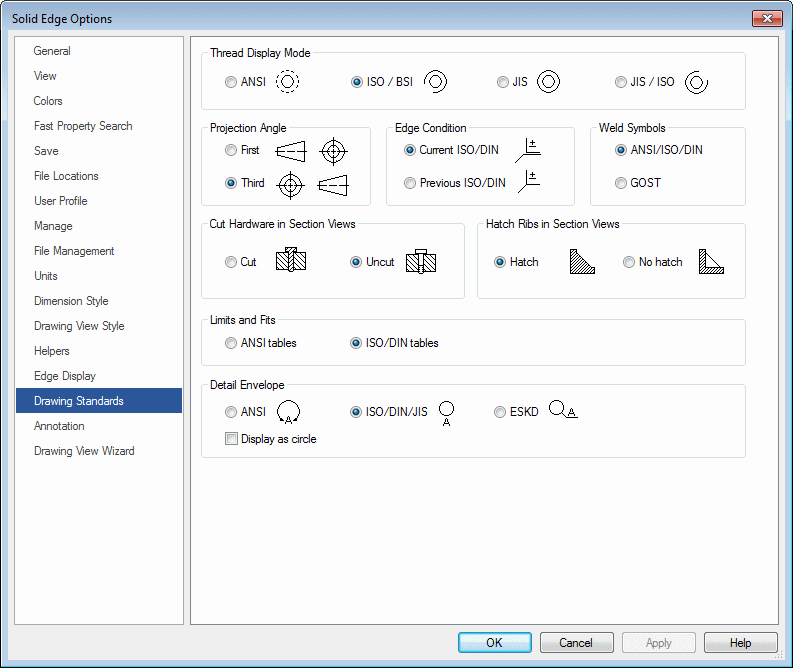
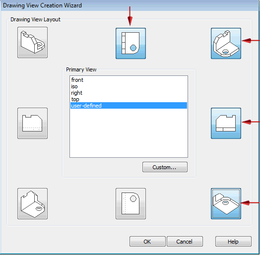
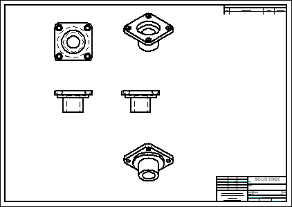
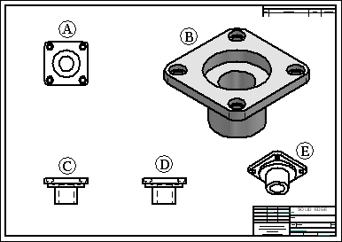
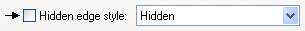
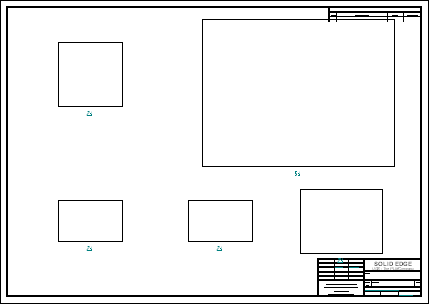
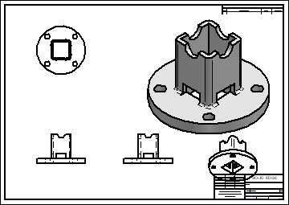

Activity: Quicksheet
A Quicksheet is a draft document that contains drawing views that are not linked to a model. When you drag a model file from the Library tab of PathFinder or from Windows Explorer onto a Quicksheet template, the views populate with the model. Quicksheet templates can only be created using the Create Quicksheet Template command.
This activity shows the process for using a Quicksheet.
After the activity, you will be able to:
-
Create a Quicksheet template.
-
Populate a Quicksheet template.
-
Place a user-defined Quicksheet in the Quicksheet template folder.
Create a new ISO draft document.
-
Choose the File → New → ISO Metric Draft.
Click File → Settings → Options.
Click Drawing Standards. On the Drawing Standards page, set the Projection Angle to Third and the Thread Display Mode to ISO/BSI, and then click OK.

Use the Drawing View Wizard to place drawing views on the new sheet. Choose the view orientations and view scale that you want to store in the Quicksheet template.
Click the View Wizard command.
In the Select Model dialog box, make sure the Look in: field is set to the folder where you saved the activity files, and set the Files of Type option to Part Document (*.par).
Select dr_plate.par and click Open.
The default initial view orientation of a part model is a front orientation. To select
four additional views to place along with it, first click the Drawing View Layout button  on the View Wizard command bar, and then use the Drawing View Creation Wizard (Drawing View Layout) dialog box to select the views shown below. Click OK.
on the View Wizard command bar, and then use the Drawing View Creation Wizard (Drawing View Layout) dialog box to select the views shown below. Click OK.

On the View Wizard command bar, set the view scale to 2:1. Move the views so they fit on the sheet as shown below and click to place them.

Define the properties that you want to apply to each type of drawing view. These are stored in the Quicksheet template.
-
Arrange the views as shown and edit the view properties.

View (A)—Hidden edge style turned off.

View (B)—Scale = 5:1, Shaded with Edges.
Views (C), (D), (E)—No change.
Click File →Settings→Create Quicksheet Template.
This command empties all drawing views and parts lists, and then converts the file into a Quicksheet Template.
Click Yes in the Create Quicksheet Template message box.
In the Save As dialog box, save the template as quicksheet_a.dft in the activity folder.

The template quicksheet_a.dft is still open. You will populate this template.
On the Library tab of the PathFinder docking window, browse to the location of dr_plate2.par and drag it onto the Quicksheet template.
The results are shown.

Notice in the results that a view overlaps the title block. The views need to be adjusted to fix this.
Save the file as dr_plate2.dft and then make the necessary adjustments.
Close the file.
If you decide to use the template in a common workflow for similar type parts, it is recommended that it be added to the Solid Edge template folder for easy access.
-
Copy quicksheet_a.dft to the Solid Edge 2023\Template\Quicksheet folder.
Create a new ISO draft file using the Quicksheet template just added to the templates folder.
Click File → New → New.
In the New dialog box, select Quicksheet from the Standard Templates list. Select quicksheet_a.dft and then click OK.
Close all files. This concludes the Quicksheet activity.
In this activity you learned how to create and populate a Quicksheet template. This tool is provided to help streamline the drawing production workflow. When you know the views and view property settings needed for similar type parts, Quicksheets can reduce repetitive steps required for each drawing created.
-
Click the Close button in the upper-right corner of the activity window.